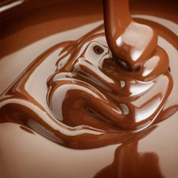

Milk Chocolate

The process of making milk chocolate was perfected by Daniel Peter of Vevey, Switzerland. The Swiss candle-maker joined his father-in-law's chocolate business and in 1867 he began experimenting with milk as an ingredient by combining the cocoa nib, sugar, fat, and condensed milk. In 1875 he brought milk chocolate to the market.
milk chocolate cubes Milk chocolate is formulated by substituting whole milk solids for a portion of the chocolate liquor used in producing sweet chocolate. The US Government requires a 10% concentration of chocolate liquor and the European rules specify a minimum of 25% cocoa solids. Therefore milk chocolate does not contain as much chocolate liquor as dark chocolate, which gives it a softer chocolate flavour.
The quality of milk chocolate varies, the better brands contain a higher percentage of chocolate liquor using pure ingredients with no artificial flavoring. European milk chocolate generally contains condensed milk, whereas American and British milk chocolate contains a milk and sugar mixture.